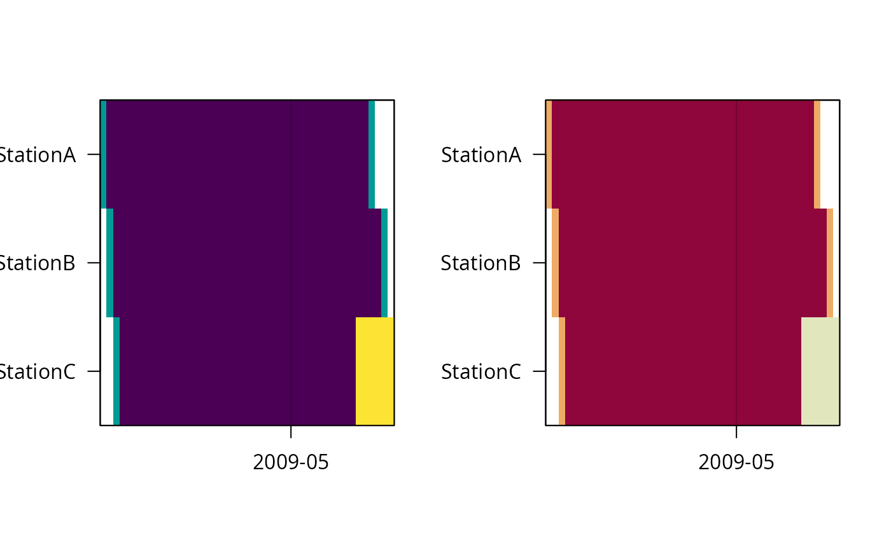
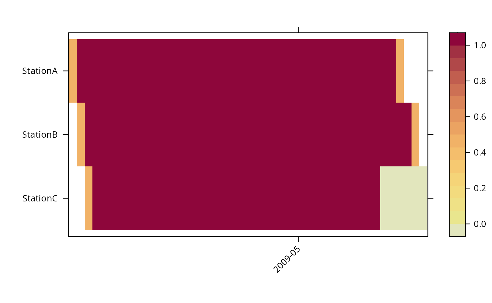
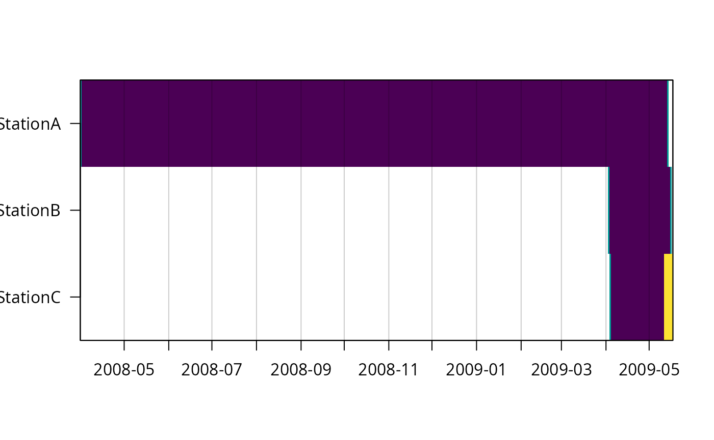
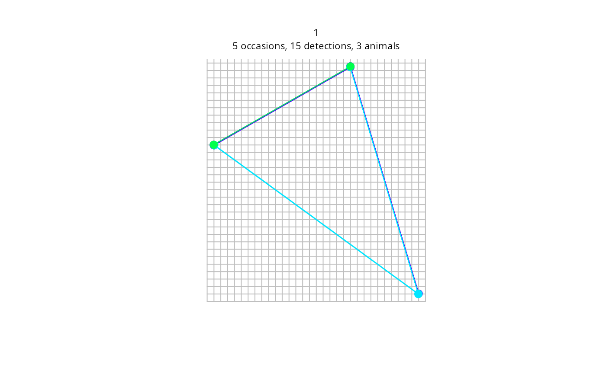
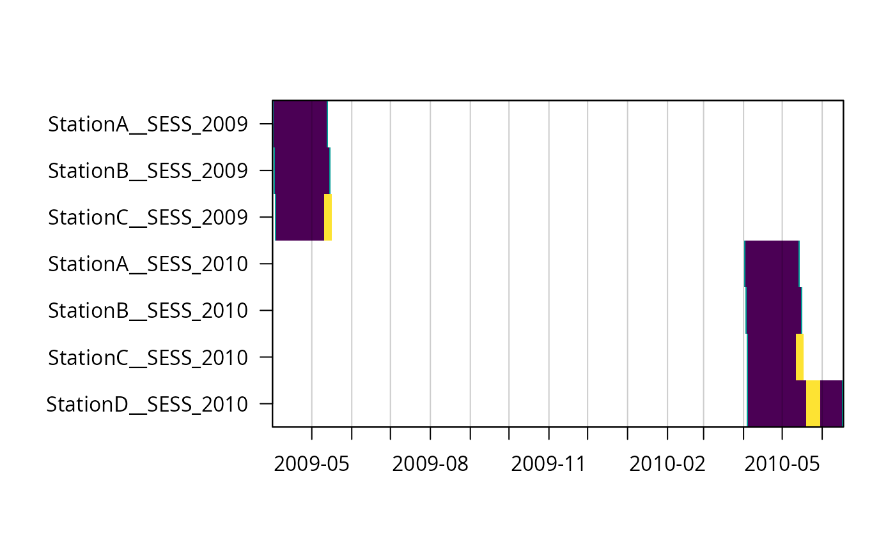
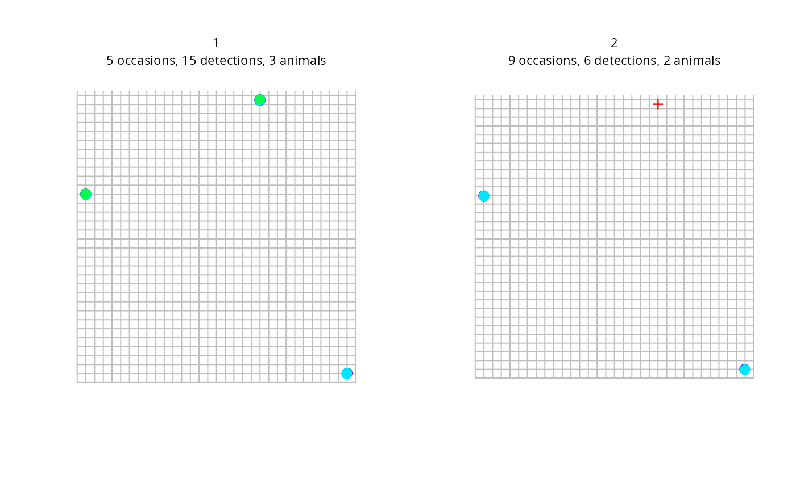

vignettes/camtrapr3.Rmd
camtrapr3.RmdThere are 2 function to tabulate species records after identification of species from images and videos.
recordTable tabulates records of all images after
species-level identification andrecordTableIndividual tabulates individuals of one
species.Nevertheless, the underlying idea is the same. For each image, the date and time it was taken are read from the image’s Exif metadata using ExifTool. Species or individual ID are read from the directory structure or image metadata (see vignette “Species and Individual Identification”). Video data are extracted analogously.
recordTable: tabulating species records
recordTable is typically run after identifying species
from images. It reads species IDs from the directory structure the
images are placed in or from image metadata tags.
First we define the directory containing our renamed, identified images
# find the directory with sample images contained in the package
wd_images_ID <- system.file("pictures/sample_images_species_dir", package = "camtrapR", lib.loc = .libPaths())and see how many JPG images we have (this is not necessary, but informative here).
length(list.files(wd_images_ID, pattern = "JPG", recursive = TRUE))## [1] 68Now we can run recordTable. Here is a minimal
example:
rec.db.species0 <- recordTable(inDir = wd_images_ID,
IDfrom = "directory")## timeZone is not specified. Assuming UTC## StationA: 8 images 0 duplicates removed |======= | 33%## StationB: 23 images 6 duplicates removed |============= | 67%## StationC: 37 images 6 duplicates removed |====================| 100%
rec.db.species0## Record table based on 3 stations and 56 records of a total of 6 species:## # A tibble: 56 × 12
## Station Species DateTimeOriginal Date Time delta.time.secs
## <chr> <chr> <dttm> <date> <chr> <dbl>
## 1 StationA PBE 2009-04-21 00:40:00 2009-04-21 00:40:00 0
## 2 StationA PBE 2009-04-22 20:19:00 2009-04-22 20:19:00 157140
## 3 StationA PBE 2009-04-22 20:21:00 2009-04-22 20:21:00 120
## 4 StationA PBE 2009-04-23 00:07:00 2009-04-23 00:07:00 13560
## 5 StationA PBE 2009-04-23 00:09:00 2009-04-23 00:09:00 120
## 6 StationA PBE 2009-05-07 17:11:00 2009-05-07 17:11:00 1270920
## 7 StationA VTA 2009-04-10 05:07:00 2009-04-10 05:07:00 0
## 8 StationA VTA 2009-05-06 19:06:00 2009-05-06 19:06:00 2296740
## 9 StationB MNE 2009-04-15 07:21:00 2009-04-15 07:21:00 0
## 10 StationB MNE 2009-04-15 07:23:00 2009-04-15 07:23:00 120
## # ℹ 46 more rows
## # ℹ 6 more variables: delta.time.mins <dbl>, delta.time.hours <dbl>,
## # delta.time.days <dbl>, Directory <chr>, FileName <chr>, n_images <int>Argument IDfrom tells the function to look for species
directories within the station directories and to take species IDs from
these. IDfrom must be set to “metadata” if metadata tagging
was used for species identification.
By default, the function returns all records. Nevertheless, we get a data frame containing 56 records, less than the number of images in the image directory (68). This is because a number of images were taken at the same time (measured with 1 minute precision by these cameras) and the function removes duplicate records.
It may suffice to illustrate this with the Pig-tailed macaque images from stationB:
list.files(file.path(wd_images_ID, "StationB", "MNE"))## [1] "StationB__2009-04-15__07-21-00(1).JPG"
## [2] "StationB__2009-04-15__07-23-00(1).JPG"
## [3] "StationB__2009-04-28__17-47-00(1).JPG"
## [4] "StationB__2009-04-28__17-47-00(2).JPG"
## [5] "StationB__2009-04-28__17-48-00(1).JPG"
## [6] "StationB__2009-04-28__17-48-00(2).JPG"
## [7] "StationB__2009-04-28__17-48-00(3).JPG"
## [8] "StationB__2009-04-28__17-49-00(1).JPG"
## [9] "StationB__2009-04-28__17-49-00(2).JPG"
## [10] "StationB__2009-04-28__17-49-00(3).JPG"There are, amongst others, 3 images taken at 17:48:00 on the 28th of April 2009. Of these, only 1 will be returned.
Here is what the columns of the record table contain:
| column | content |
|---|---|
Station |
the station the image is from |
Species |
species name |
DateTimeOriginal |
Date and time of record in R-readable format |
Date |
record date |
Time |
record time of day |
delta.time.secs |
time difference between record and last (independent) record of same species at same station / camera* (in seconds) |
delta.time.mins |
time difference between record and last (independent) record of same species at same station / camera* (in minutes) |
delta.time.hours |
time difference between record and last (independent) record of same species at same station / camera* (in hours) |
delta.time.days |
time difference between record and last (independent) record of same species at same station / camera* (in days) |
Directory |
directory the image is in |
FileName |
image file name |
*see below: Independence between cameras within stations
Imagine a species that loves to hang out in front of your cameras.
You will end up with hundreds of shots of the same species, maybe even
the same animal. Therefore, images can be filtered using an adjustable
criterion for temporal independence between subsequent records of the
same species in an attempt to remove non-independent records. This is
achieved via argument minDeltaTime. It is the minimum time
difference (in minutes) between two records of the same species at the
same station which are to be considered independent. The default is 0,
causing the function to return all records. Setting it to a higher
number, e.g. 60 (i.e., 1 hour), is commonly done to thin the number of
records. Note that you will not lose records of different species, even
if they fall within the specified time interval from a record.
The argument deltaTimeComparedTo further controls how
independence between records is assessed. Setting it to “lastRecord”
returns only records taken minDeltaTime minutes after the
last record. Setting it to “lastIndependentRecord” returns only records
taken minDeltaTime minutes after the last
independent record.
Let’s now apply an 1-hour independence criterion and define a time zone.
rec.db.species60 <- recordTable(inDir = wd_images_ID,
IDfrom = "directory",
minDeltaTime = 60,
deltaTimeComparedTo = "lastRecord",
timeZone = "Asia/Kuala_Lumpur")## StationA: 8 images 0 duplicates removed |======= | 33%## StationB: 23 images 6 duplicates removed |============= | 67%## StationC: 37 images 6 duplicates removed |====================| 100%
nrow(rec.db.species60)## [1] 40Now 40 records were returned instead of 56. The missing records were taken less than 1 hour after the prior record of the same species at the same station and therefore omitted.
Note the warning about the missing time zone in the minimal example above. By default, camtrapR will assume UTC time zone. This should work well in most situations (even though the time zone may not be correct, strictly speaking), because UTC does not use daylight saving time (DST, aka ‘summer time’), and camera traps normally don’t use time zones (hence, camera traps will normally not respect DST of the area you work in and will not adjust image timestamps accordingly).
Now, if you work in an area that uses DST, and your camera does not know about DST, things can go wrong in various ways and you may end up with a systematic 1-hour offset. If you set your cameras up during DST (in summer) and set the internal clock accordingly, all records taken in winter (non-DST period) will be recorded as 1 hour later than according to actual clock time. If you set your cameras up during winter (not DST) and set the internal clock accordingly, all records taken in summer (DST period) will be recorded as 1 hour earlier than according to actual clock time.
In addition if you specify a time zone with DST and your cameras don’t respect it, records may fall into the non-existing hour when clocks are advanced in spring, leading to an error in interpreting the date/time.
So, the question whether or not your cameras record the time zone
becomes very important. Here is some recommendations on how to use the
argument timeZone.
If your cameras don’t save the time zone, and your time zone does not
have DST, set argument timeZone to your study area time
zone If your cameras don’t save the time zone, and your time zone has
DST, leave argument timeZone at the default UTC. If your
cameras save the time zone and adjust image timestamps accordingly, set
argument timeZone to your study area time zone (both if
your area has DST or not).
In other words, it is advised to set argument timeZone
to your study area’s time zone (one of OlsonNames()),
unless the time zone of your study area has DST, but your
cameras don’t record it.
The issue of temporal independence between records becomes slightly
more complex if more than one camera was operated at stations. That
information can and should be included in the output of
recordTable (and recordTableIndividual). Users
can then decide whether temporal independence is to be assessed within
stations or within cameras at each station. In the first case, argument
camerasIndependent must be set to FALSE. 2 images taken at
different 2 cameras at the same station within minDeltaTime
minutes will be reported as 1 record in the record table (suitable if
cameras were places in pairs). In the second case
camerasIndependent must be set to TRUE and 2 images taken
at different 2 cameras at the same station within
minDeltaTime minutes will be reported as 2 record in the
record table (suitable e.g., if cameras were located at some distance to
one another and faced different trails).
The cameraID argument controls where camtrapR will look
for camera IDs: in the file names (after renaming using
imageRename,
e.g. “renamedImages/StationA/StationA__Camera1__2015-12-31__23-59-59(1).JPG”)
or in the directory structure
(e.g. renamedImages/StationA/Camera1/StationA__Camera1__2015-12-31__23-59-59(1).JPG”).
If missing, it will be assumed there was only 1 camera per station.
Argument exclude can be used to ignore certain species.
This is useful for omitting images in directories like “team” or
“unidentified”. Here is an example:
# see what species we recorded
table(rec.db.species60$Species)##
## EGY MNE PBE TRA UNID VTA
## 6 2 18 8 1 5
# remove "UNID" by setting argument exclude = "UNID"
rec.db.species60.exclude <- recordTable(inDir = wd_images_ID,
IDfrom = "directory",
minDeltaTime = 60,
deltaTimeComparedTo = "lastIndependentRecord",
timeZone = "Asia/Kuala_Lumpur",
exclude = "UNID")## StationA: 8 images 0 duplicates removed |======= | 33%## StationB: 22 images 6 duplicates removed |============= | 67%## StationC: 37 images 6 duplicates removed |====================| 100%
# note that "UNID" is gone now
table(rec.db.species60.exclude$Species)##
## EGY MNE PBE TRA VTA
## 6 2 18 8 5recordTable and recordTableIndividual can
both extract additional metadata from images (apart from date and time).
For example, some camera models record ambient temperature or moon
phase, which may be of interest. Metadata tags are stored in the images
at the time they are taken and can be accessed and extracted if their
tag names are known. Some tag names are standardised
(e.g. “DateTimeOriginal”) while others are manufacturer-specific.
Therefore, function exifTagNames returns all Exif metadata
it finds in a sample image. Users can then choose which to extract with
recordTable and recordTableIndividual.
wd_images_ID <- system.file("pictures/sample_images_species_dir", package = "camtrapR")
exifTagNames(inDir = wd_images_ID)## Metadata of:
## /home/juergen/R/x86_64-pc-linux-gnu-library/4.6/camtrapR/pictures/sample_images_species_dir/StationA/PBE/StationA__2009-04-21__00-40-00(1).JPG## tag_group tag_name
## 1 ExifTool ExifToolVersion
## 2 ExifTool Warning
## 3 File FileName
## 4 File Directory
## 5 File FileSize
## 6 File FileModifyDate
## 7 File FileAccessDate
## 8 File FileInodeChangeDate
## 9 File FilePermissions
## 10 File FileType
## 11 File FileTypeExtension
## 12 File MIMEType
## 13 File ExifByteOrder
## 14 File ImageWidth
## 15 File ImageHeight
## 16 File EncodingProcess
## 17 File BitsPerSample
## 18 File ColorComponents
## 19 File YCbCrSubSampling
## 20 EXIF Make
## 21 EXIF Model
## 22 EXIF XResolution
## 23 EXIF YResolution
## 24 EXIF ModifyDate
## 25 EXIF ResolutionUnit
## 26 EXIF YCbCrPositioning
## 27 EXIF ExifVersion
## 28 EXIF ComponentsConfiguration
## 29 EXIF FlashpixVersion
## 30 EXIF ColorSpace
## 31 EXIF ExifImageWidth
## 32 EXIF ExifImageHeight
## 33 EXIF DateTimeOriginal
## 34 EXIF CreateDate
## 35 EXIF UserComment
## 36 EXIF ShutterSpeedValue
## 37 EXIF Compression
## 38 EXIF ThumbnailOffset
## 39 EXIF ThumbnailLength
## 40 EXIF ThumbnailImage
## 41 Composite ImageSize
## 42 Composite Megapixels
## 43 Composite ShutterSpeed
## value
## 1 13.50
## 2 Invalid EXIF text encoding for UserComment
## 3 StationA__2009-04-21__00-40-00(1).JPG
## 4 /home/juergen/R/x86_64-pc-linux-gnu-library/4.6/camtrapR/pictures/sample_images_species_dir/StationA/PBE
## 5 28 kB
## 6 2026:07:28 08:12:12+02:00
## 7 2026:07:28 08:14:04+02:00
## 8 2026:07:28 08:13:07+02:00
## 9 -rw-r--r--
## 10 JPEG
## 11 jpg
## 12 image/jpeg
## 13 Little-endian (Intel, II)
## 14 100
## 15 75
## 16 Baseline DCT, Huffman coding
## 17 8
## 18 3
## 19 YCbCr4:2:2 (2 1)
## 20 G4
## 21 CUDDEBACK
## 22 72
## 23 72
## 24 2009:04:21 00:40:00
## 25 inches
## 26 Co-sited
## 27 0200
## 28 Y, Cb, Cr, -
## 29 0100
## 30 sRGB
## 31 100
## 32 75
## 33 2009:04:21 00:40:00
## 34 2009:04:21 00:40:00
## 35 1 ATTEMPT G1H
## 36 1
## 37 JPEG (old-style)
## 38 408
## 39 25353
## 40 (Binary data 25353 bytes, use -b option to extract)
## 41 100x75
## 42 0.007
## 43 1The output table contains tag groups, tag descriptions, tag names and
tag values. The values in tag_group help to unambiguously
identify specific metadata tags.
Use the entries in tag_name (not
tag_description) when providing values to the argument
additionalMetadataTags in therecordTable
functions.
Of the tags shown here, “DateTimeOriginal” contains the date and time that camtrapR reads out. Apart from that, there is little information of ecological interest in the example data. However, for demonstration purposes, let’s extract information about the camera model and make. To be as precise as possible, we provide tags in the format: tag_group:tag_name (e.g. EXIF:Model)
rec.db.species.metadata1 <- recordTable(inDir = wd_images_ID,
IDfrom = "directory",
timeZone = "Asia/Kuala_Lumpur",
additionalMetadataTags = c("EXIF:Model", "EXIF:Make"))## StationA: 8 images 0 duplicates removed |======= | 33%## StationB: 23 images 6 duplicates removed |============= | 67%## StationC: 37 images 6 duplicates removed |====================| 100%
rec.db.species.metadata1## Record table based on 3 stations and 56 records of a total of 6 species:## # A tibble: 56 × 14
## Station Species DateTimeOriginal Date Time delta.time.secs
## <chr> <chr> <dttm> <date> <chr> <dbl>
## 1 StationA PBE 2009-04-21 00:40:00 2009-04-21 00:40:00 0
## 2 StationA PBE 2009-04-22 20:19:00 2009-04-22 20:19:00 157140
## 3 StationA PBE 2009-04-22 20:21:00 2009-04-22 20:21:00 120
## 4 StationA PBE 2009-04-23 00:07:00 2009-04-23 00:07:00 13560
## 5 StationA PBE 2009-04-23 00:09:00 2009-04-23 00:09:00 120
## 6 StationA PBE 2009-05-07 17:11:00 2009-05-07 17:11:00 1270920
## 7 StationA VTA 2009-04-10 05:07:00 2009-04-10 05:07:00 0
## 8 StationA VTA 2009-05-06 19:06:00 2009-05-06 19:06:00 2296740
## 9 StationB MNE 2009-04-15 07:21:00 2009-04-15 07:21:00 0
## 10 StationB MNE 2009-04-15 07:23:00 2009-04-15 07:23:00 120
## # ℹ 46 more rows
## # ℹ 8 more variables: delta.time.mins <dbl>, delta.time.hours <dbl>,
## # delta.time.days <dbl>, Directory <chr>, FileName <chr>, EXIF.Model <chr>,
## # EXIF.Make <chr>, n_images <int>There are 2 additional columns containing the information from the metadata we requested.
recordTableIndividual: tabulating individuals of a
species
Individual identification of species is a prerequiste for running
(spatial) capture-recapture models. recordTableIndividual
and the subsequent spatialDetectionHistory function prepare
data for these models.
# find the directory with tagged sample images contained in the package
wd_images_individual_ID <- system.file("pictures/sample_images_indiv_tag/LeopardCat", package = "camtrapR")
# missing space in species = "LeopardCat" is because of CRAN package policies
rec.db.pbe <- recordTableIndividual(inDir = wd_images_individual_ID,
IDfrom = "metadata",
minDeltaTime = 60,
deltaTimeComparedTo = "lastIndependentRecord",
hasStationFolders = FALSE, # images are not in station directories
metadataIDTag = "individual", # the name of the metadata tag containing individual IDs
timeZone = "Asia/Kuala_Lumpur"
)## StationA, StationB, StationC: 26 images 3 duplicates removed |====================| 100%In addition to the metadata that were saved when the image was taken (see above), custom metadata tags assigned in image management software can also be extracted. These may contain species ID tags if species were identified using metadata tags (instead of moving images into species directories), but also individual IDs, animal counts, sex of animals recorded, etc..
rec.db.pbe## Record table based on 3 stations and 18 records of a total of 1 species:## # A tibble: 18 × 16
## Station Species Individual DateTimeOriginal Date Time
## <chr> <chr> <chr> <dttm> <date> <chr>
## 1 StationA LeopardCat 1 2009-05-07 17:11:00 2009-05-07 17:11:00
## 2 StationA LeopardCat 2 2009-04-21 00:40:00 2009-04-21 00:40:00
## 3 StationA LeopardCat 2 2009-04-22 20:19:00 2009-04-22 20:19:00
## 4 StationA LeopardCat 2 2009-04-23 00:07:00 2009-04-23 00:07:00
## 5 StationB LeopardCat 1 2009-04-07 00:23:00 2009-04-07 00:23:00
## 6 StationB LeopardCat 1 2009-04-14 06:13:00 2009-04-14 06:13:00
## 7 StationB LeopardCat 1 2009-04-24 22:54:00 2009-04-24 22:54:00
## 8 StationB LeopardCat 2 2009-04-05 00:11:00 2009-04-05 00:11:00
## 9 StationB LeopardCat 2 2009-04-05 23:13:00 2009-04-05 23:13:00
## 10 StationB LeopardCat 2 2009-04-10 04:07:00 2009-04-10 04:07:00
## 11 StationB LeopardCat 2 2009-05-14 02:11:00 2009-05-14 02:11:00
## 12 StationB LeopardCat 3 2009-04-25 04:33:00 2009-04-25 04:33:00
## 13 StationC LeopardCat 1 2009-04-06 03:00:00 2009-04-06 03:00:00
## 14 StationC LeopardCat 1 2009-04-14 23:30:00 2009-04-14 23:30:00
## 15 StationC LeopardCat 1 2009-04-23 03:33:00 2009-04-23 03:33:00
## 16 StationC LeopardCat 1 2009-05-05 18:24:00 2009-05-05 18:24:00
## 17 StationC LeopardCat 2 2009-04-18 22:57:00 2009-04-18 22:57:00
## 18 StationC LeopardCat 3 2009-05-07 18:47:00 2009-05-07 18:47:00
## # ℹ 10 more variables: delta.time.secs <dbl>, delta.time.mins <dbl>,
## # delta.time.hours <dbl>, delta.time.days <dbl>, Directory <chr>,
## # FileName <chr>, metadata_Species <chr>, metadata_individual <chr>,
## # n_images <int>, HierarchicalSubject <chr>The camera operation matrix is a day-by-station matrix that states how many cameras were active at a station on a given day. Rows represent stations and columns days, beginning with the day the first camera was set up and ending the day the last camera was retrieved. It is calculated from the camera trap table mention in vignette 1 (see ?camtraps for an example). Users can give the setup / retrieval / problem columns in the input table as dates or date-times (since version 2.1.0).
Important: Prior to version 2.1.0, the values were integer numbers, with 1 indicating the camera was active on a day (or possibly higher values if multiple cameras at a station are combined).
From version 2.1.0, the values are the fraction of the day a camera was active. If only dates are provided in the camera trap table, the function will assume 12 noon as setup/retrieval time Problem periods will be assumed to last the entire day.
If imput is provided as date-times, output will be the exact fraction of day a station or camera was active (taking into account setup / retrieval time as well as time of Problem periods).
# first load the camera trap station table
data(camtraps)
dateFormat <- "dmy" # requires lubridate package
# alternatively, use "%d/%m/%Y" (from base R)
camop_problem <- cameraOperation(CTtable = camtraps,
stationCol = "Station",
setupCol = "Setup_date",
retrievalCol = "Retrieval_date",
writecsv = FALSE,
hasProblems = TRUE,
dateFormat = dateFormat
)
# as a reminder, these are the dates in our station information table
camtraps[,-which(colnames(camtraps) %in% c("utm_y", "utm_x"))]## # A tibble: 3 × 5
## Station Setup_date Retrieval_date Problem1_from Problem1_to
## <chr> <chr> <chr> <chr> <chr>
## 1 StationA 02/04/2009 14/05/2009 "" ""
## 2 StationB 03/04/2009 16/05/2009 "" ""
## 3 StationC 04/04/2009 17/05/2009 "12/05/2009" "17/05/2009"
# now let's have a look at the first few columns of the camera operation matrix
camop_problem[, 1:5]## Camera trap station operation matrix based on
## 3 stations monitored from 2009-04-02 till 2009-04-06,
## representing 5 days (5 active):## 2009-04-02 2009-04-03 2009-04-04 2009-04-05 2009-04-06
## StationA 0.5 1 1 1 1
## StationB NA 0.5 1 1 1
## StationC NA NA 0.5 1 1## Camera trap station operation matrix based on
## 3 stations monitored from 2009-05-11 till 2009-05-17,
## representing 7 days (6 active):## 2009-05-11 2009-05-12 2009-05-13 ...(1 more) 2009-05-15 2009-05-16
## StationA 1 1 1 ... NA NA
## StationB 1 1 1 ... 1 0.5
## StationC 1 0 0 ... 0 0
## 2009-05-17
## StationA NA
## StationB NA
## StationC 0
## # Use `print(nCols = ...)` to see more columns
## If stations were not set up, values are NA. Operational stations get value 1. If cameras were set up but malfunctioning, it is 0 (if hasProblems = TRUE).
camtraps_hrs <- camtraps
# assign hours for setup and retrieval
camtraps_hrs$Setup_date <- paste(camtraps_hrs$Setup_date, c("12", "15", "18"))
camtraps_hrs$Retrieval_date <- paste(camtraps_hrs$Retrieval_date, c("18", "15", "12"))
# assign a random hours for begin of Problem at station 3
camtraps_hrs$Problem1_from[3] <- paste(camtraps_hrs$Problem1_from[3], "20")
# Problem ends with retrieval (i.e., malfunction until camera retrieved)
camtraps_hrs$Problem1_to[3] <- camtraps_hrs$Retrieval_date[3]
# create camera operation matrix
camop_hours <- cameraOperation(CTtable = camtraps_hrs,
stationCol = "Station",
setupCol = "Setup_date",
retrievalCol = "Retrieval_date",
hasProblems = TRUE,
dateFormat = "dmy H"
)
# as a reminder, these are the date-times in our station information table
camtraps_hrs## Camera table with 3 stations in 3 rows:## # A tibble: 3 × 7
## Station utm_y utm_x Setup_date Retrieval_date Problem1_from Problem1_to
## <chr> <int> <int> <chr> <chr> <chr> <chr>
## 1 StationA 604000 526000 02/04/2009 12 14/05/2009 18 "" ""
## 2 StationB 606000 523000 03/04/2009 15 16/05/2009 15 "" ""
## 3 StationC 607050 525000 04/04/2009 18 17/05/2009 12 "12/05/2009 2… "17/05/200…
# now let's have a look at the first few columns of the camera operation matrix
camop_hours[, 1:5]## Camera trap station operation matrix based on
## 3 stations monitored from 2009-04-02 till 2009-04-06,
## representing 5 days (5 active):## 2009-04-02 2009-04-03 2009-04-04 2009-04-05 2009-04-06
## StationA 0.5 1 1 1 1
## StationB NA 0.375 1 1 1
## StationC NA NA 0.25 1 1## Camera trap station operation matrix based on
## 3 stations monitored from 2009-05-11 till 2009-05-17,
## representing 7 days (6 active):## 2009-05-11 2009-05-12 2009-05-13 ...(1 more) 2009-05-15 2009-05-16
## StationA 1 1 1 ... NA NA
## StationB 1 1 1 ... 1 0.625
## StationC 1 0.833 0 ... 0 0
## 2009-05-17
## StationA NA
## StationB NA
## StationC 0
## # Use `print(nCols = ...)` to see more columns
## Version 2.1 introduced support of cameraOperation() for date-times in the setup / retrieval / problem columns. By giving the setup / retrieval / problem columns as date-times (and adjusting argument dateFormat accordingly), one can calculate precise daily effort.
If the times are unknown and users provide dates only to argument dateFormat, camtrapR will assume that setup and retrieval were at 12 noon. Malfunction periods (indicated by the problem columns) will be interpreted as the cameras having malfunctioned the whole day.
This is how the handling of setup/retrieval days differs between dates and date-times in dateFormat:
| version | dateFormat is date | dateFormat is date-time |
|---|---|---|
| prior to 2.1 | 1 | not implemented |
| 2.1 and later | 0.5 | calculated precisely |
This is how the handling of problems / malfunction periods differs between dates and date-times in dateFormat:
| version | dateFormat is date | dateFormat is date-time |
|---|---|---|
| prior to 2.1 | 0 | not implemented |
| 2.1 and later | 0 | calculated precisely |
By default, the camera operation matrix refers to days, centered on noon and lasting from midnight to midnight the next day. In some situations it can make sense to shift the time frame for analyses, so the camera operation matrix describes trap nights (centered on midnight, lasting from noon to noon the next day).
To that end, the argument occasionStartTime can be set. Prior to version 2.1.0, it was an argument of detectionHistory and spatialDetectionHistory, but was moved to cameraOperation in v2.1.0. It can be set to an hour between 0 and 23, describing the hour the occasions begin.
# create camera operation matrix with occasions / trap days starting on noon (until noon the next day)
camop_hours_12 <- cameraOperation(CTtable = camtraps_hrs,
stationCol = "Station",
setupCol = "Setup_date",
retrievalCol = "Retrieval_date",
hasProblems = TRUE,
dateFormat = "dmy H",
occasionStartTime = 12
)
# now let's have a look at the first few columns of the camera operation matrix
camop_hours_12[, 1:5]## Camera trap station operation matrix based on
## 3 stations monitored from 2009-04-02 till 2009-04-06,
## representing 5 days (5 active):## 2009-04-02+12h 2009-04-03+12h 2009-04-04+12h 2009-04-05+12h
## StationA 1 1 1 1
## StationB NA 0.875 1 1
## StationC NA NA 0.75 1
## 2009-04-06+12h
## StationA 1
## StationB 1
## StationC 1## Camera trap station operation matrix based on
## 3 stations monitored from 2009-05-11 till 2009-05-17,
## representing 7 days (6 active):## 2009-05-11+12h 2009-05-12+12h 2009-05-13+12h ...(1 more)
## StationA 1 1 1 ...
## StationB 1 1 1 ...
## StationC 1 0.333 0 ...
## 2009-05-15+12h 2009-05-16+12h 2009-05-17+12h
## StationA NA NA NA
## StationB 1 0.125 NA
## StationC 0 0 NA
## # Use `print(nCols = ...)` to see more columns
## The column names now indicate the shift, “+12h” in the example above. That means that the first column shows the effort from 12 noon on 2009-04-02 until 12 noon 2009-04-03.
When using this camera operation matrix in detectionHistory or spatialDetectionHistory, the shift will be extracted and trapping effort will be calculated accordingly. Therefore, the argument occasionStartTime in these two functions is deprecated from version 2.1.0.
Often multiple cameras are set at a station, but data are to be analysed on a station-level, not at the level of individual cameras. cameraOperation can combine these effort of individual cameras according to how they were set up.
First, let’s create a simple artifial data set. Note how the columns contain an hour (e.g. 12 noon in this case: “2020-01-01 12”). Other formats for date-time are possible and can be specified with argument dateFormat in cameraOperation.
camtraps_by_camera <- data.frame(Station = c("A", "A"),
camera = c("cam1", "cam2"),
setup = c("2020-01-01 12"),
retrieval = c("2020-01-08 18", "2020-01-07 18"),
Problem1_from = c("2020-01-03 12", NA),
Problem1_to = c("2020-01-05 18", NA),
Problem2_from = c("2020-01-06 12", NA),
Problem2_to = c("2020-01-07 12", NA))
camtraps_by_camera## Station camera setup retrieval Problem1_from Problem1_to
## 1 A cam1 2020-01-01 12 2020-01-08 18 2020-01-03 12 2020-01-05 18
## 2 A cam2 2020-01-01 12 2020-01-07 18 <NA> <NA>
## Problem2_from Problem2_to
## 1 2020-01-06 12 2020-01-07 12
## 2 <NA> <NA>To aggregate data from cameras to station, you need a camera column (“camera” in the example above). Furthermore, set argument byCamera = FALSE. Then, the combinations of the arguments camerasIndependent and allCamsOn define how effort from individual cameras is combined. allCamsOn means all cameras need to be active for a station to be considered active. camerasIndepndent specifies whether the cameras accumulate effort independently or now. See ?cameraoperation for details.
Below we’ll run cameraOperation of the little sample table camtraps_by_camera, for all possible combinations of allCamsOn, cameraOperation and hasProblems.
# list of common arguments for the different function runs
args.common <- list(CTtable = camtraps_by_camera,
stationCol = "Station",
cameraCol = "camera",
setupCol = "setup",
retrievalCol = "retrieval",
dateFormat = "ymd H",
byCamera = FALSE,
writecsv = FALSE
)
# combinations of the arguments of interest
fun.args0 <- expand.grid(allCamsOn = c(T,F),
camerasIndependent = c(T,F),
hasProblems = c(T,F))
# create a list of function arguments with the varying arguments
fun.args1 <- apply(fun.args0, MARGIN = 1, FUN = function(x) modifyList(args.common, as.list(x)))
# run cameraOperation on each combination of arguments, and combine into an output table with the function arguments
camOp_station_aggregation <- cbind(fun.args0, do.call(rbind, lapply(fun.args1, FUN = function(x)
do.call(cameraOperation, x))), row.names = NULL)## CTtable contains Problem columns, but `hasProblem` is FALSE. Ensure this is intended.
## CTtable contains Problem columns, but `hasProblem` is FALSE. Ensure this is intended.
## CTtable contains Problem columns, but `hasProblem` is FALSE. Ensure this is intended.
## CTtable contains Problem columns, but `hasProblem` is FALSE. Ensure this is intended.Now let’s see how the daily effort was combined for the different combinations of allCamsOn and camerasIndependent when hasProblems is FALSE.
camOp_station_aggregation [camOp_station_aggregation$hasProblems == FALSE, -3]## allCamsOn camerasIndependent 2020-01-01 2020-01-02 2020-01-03 2020-01-04
## 5 TRUE TRUE 1.0 2 2 2
## 6 FALSE TRUE 1.0 2 2 2
## 7 TRUE FALSE 0.5 1 1 1
## 8 FALSE FALSE 0.5 1 1 1
## 2020-01-05 2020-01-06 2020-01-07 2020-01-08
## 5 2 2 1.500 NA
## 6 2 2 1.750 0.75
## 7 1 1 0.750 NA
## 8 1 1 0.875 0.75As you can see, allCamsOn has no effect if all cameras were active (due to hasProblems = FALSE). The differences on the setup/retrieval day are due to camerasIndependent.
Now with hasProblems = TRUE:
camOp_station_aggregation [camOp_station_aggregation$hasProblems == TRUE, -3]## allCamsOn camerasIndependent 2020-01-01 2020-01-02 2020-01-03 2020-01-04
## 1 TRUE TRUE 1.0 2 1.00 0.0
## 2 FALSE TRUE 1.0 2 1.50 1.0
## 3 TRUE FALSE 0.5 1 0.50 0.0
## 4 FALSE FALSE 0.5 1 0.75 0.5
## 2020-01-05 2020-01-06 2020-01-07 2020-01-08
## 1 0.500 1.00 1.000 NA
## 2 1.250 1.50 1.250 0.75
## 3 0.250 0.50 0.500 NA
## 4 0.625 0.75 0.625 0.75Here’s how the daily aggregates are calculate for the different combinations of allCamsOn and camerasIndependent, and depending on whether input columns are date or date-time (from v2.1.0). In the table below, x is a vector of values at individual cameras for one day (e.g. c(1,0.5) when one camera was active the whole day, the other cameras half a day).
| camerasIndependent | allCamsOn | input columns | aggregate with | example c(1, 0.5) | example c(1, 1) |
|---|---|---|---|---|---|
| TRUE | TRUE | date-time | ifelse(all(x == 1), sum(x), min(x) * length(x)) | 1 | 2 |
| TRUE | TRUE | date | ifelse(all(x == 1), sum(x), 0) | 0 | 2 |
| TRUE | FALSE | date-time | sum | 1.5 | 2 |
| TRUE | FALSE | date | sum | 1.5 | 2 |
| FALSE | TRUE | date-time | min | 0.5 | 1 |
| FALSE | TRUE | date | ifelse(all(x == 1), 1, 0) | 0 | 1 |
| FALSE | FALSE | date-time | mean | 0.75 | 2 |
| FALSE | FALSE | date | ifelse(sum(x, na.rm = TRUE) >= 1, 1, sum(x, na.rm = TRUE)) | 1 | 1 |
There is a little function for plotting the camera operation matrix included in the package, accessible directly via plot(). Imagine there is a typo in one of your date fields and the setup or retrieval year is wrong. You will easily be able to spot it this way.
Here is the camera operation matrix calculated above (in two different color palettes, the default being the viridis palette - requires R 3.6.0 or higher).

One can also plot with the levelplot function from the lattice package:
plot(camop_problem, lattice = TRUE)
plot(camop_problem, palette = "Heat", lattice = TRUE)
Here is what it would look like if the year is wrong for one station.
camtraps_typo <- camtraps
# replace 2009 with 2008 in setup date of station A
camtraps_typo$Setup_date[1] <- gsub("2009", "2008", camtraps_typo$Setup_date[1])
camop_typo <- cameraOperation(CTtable = camtraps_typo,
stationCol = "Station",
setupCol = "Setup_date",
retrievalCol = "Retrieval_date",
writecsv = FALSE,
hasProblems = TRUE,
dateFormat = dateFormat
)
plot(camop_typo)
Note that the colors are stretched between the lowest and highest value. There is no dedicated color for 0, designating non-operational cameras.
For a list of color palettes, see here.
The camera operation matrix can easily be saved as a csv file (by
setting argument writecsv = TRUE,
check.names = FALSE and defining outdir). In
order to load the csv into R again, it is necessary to tell R to use the
station IDs (the first column) as row names:
camOp <- read.csv(file = ..., row.names = 1, check.names = FALSE)check.names = FALSE ensures that column names (the
dates) are read back into R as they are (e.g. “2015-12-01”). Otherwise
one may end up with unreadable column names (at least for camtrapR) such
as “X2015.12.01”.
It is very easy to prepare input for single-season occupancy and spatial capture-recapture (SCR) analyses in camtrapR. All one needs it a record table and the camera operation matrix. Making input for SCR analyses further requires the camera trap station table.
Occupancy models use detection/non-detection matrices in which for every station and every occasion “1”” signifies a detection of a given species, “0”” signifies non-detecion, and NA missing data.
Here is how to obtain a detection/non-detection matrix using function
detectionHistory. Because the function builds on prior
functions (recordTable and cameraOperation) we
also show these function here to provide the context.
# create camera operation matrix
camop_no_problem <- cameraOperation(CTtable = camtraps,
stationCol = "Station",
setupCol = "Setup_date",
retrievalCol = "Retrieval_date",
hasProblems = FALSE,
dateFormat = dateFormat
)## CTtable contains Problem columns, but `hasProblem` is FALSE. Ensure this is intended.
# define image directory
wd_images_ID <- system.file("pictures/sample_images_species_dir", package = "camtrapR")
# make record table
recordTableSample <- recordTable(inDir = wd_images_ID,
IDfrom = "directory",
minDeltaTime = 60,
deltaTimeComparedTo = "lastIndependentRecord",
timeZone = "Asia/Kuala_Lumpur"
)## StationA: 8 images 0 duplicates removed |======= | 33%## StationB: 23 images 6 duplicates removed |============= | 67%## StationC: 37 images 6 duplicates removed |====================| 100%
# make detection history (without trapping effort)
DetHist1 <- detectionHistory(recordTable = recordTableSample,
camOp = camop_no_problem,
stationCol = "Station",
speciesCol = "Species",
recordDateTimeCol = "DateTimeOriginal",
species = "VTA",
occasionLength = 7,
day1 = "station",
includeEffort = FALSE
)## Warning: timeZone is not specified. Assuming UTC
DetHist1## Detection history list## $detection_history
## o1 o2 o3 ...(1 more) o5 o6 o7
## StationA 0 1 0 ... 1 0 NA
## StationB 0 1 0 ... 0 0 NA
## StationC 0 0 1 ... 0 0 NANote the warning about the missing time zone (as in the functions
recordTable and recordTable). Normally, it
should be fine, but to be on the safe side, better set it to your study
area’s time zone.
If trapping effort is thought to influence detection probability, it
can be returned by setting includeEffort = TRUE. This way
the number of active trapping days per occasion and station is
returned.
# make detection history (with trapping effort)
DetHist2 <- detectionHistory(recordTable = recordTableSample,
camOp = camop_no_problem,
stationCol = "Station",
speciesCol = "Species",
recordDateTimeCol = "DateTimeOriginal",
species = "VTA",
timeZone = "Asia/Kuala_Lumpur",
occasionLength = 7,
day1 = "station",
includeEffort = TRUE,
scaleEffort = FALSE
)
DetHist2[[1]] # detection history## o1 o2 o3 o4 o5 o6 o7
## StationA 0 1 0 0 1 0 0
## StationB 0 1 0 1 0 0 0
## StationC 0 0 1 0 0 0 0
DetHist2[[2]] # effort (in days per occasion)## o1 o2 o3 o4 o5 o6 o7
## StationA 6.5 7 7 7 7 7 0.5
## StationB 6.5 7 7 7 7 7 1.5
## StationC 6.5 7 7 7 7 7 1.5To help with convergence of models, the effort matrix can be scaled
to mean = 0 and sd = 1 by setting scaleEffort = TRUE. If
writecsv = TRUE, the scaling parameters will also be saved
in a separate csv file.
DetHist3 <- detectionHistory(recordTable = recordTableSample,
camOp = camop_no_problem,
stationCol = "Station",
speciesCol = "Species",
recordDateTimeCol = "DateTimeOriginal",
species = "VTA",
timeZone = "Asia/Kuala_Lumpur",
occasionLength = 7,
day1 = "station",
includeEffort = TRUE,
scaleEffort = TRUE
)
DetHist3[[1]] # detection history (same as above)## o1 o2 o3 o4 o5 o6 o7
## StationA 0 1 0 0 1 0 0
## StationB 0 1 0 1 0 0 0
## StationC 0 0 1 0 0 0 0
DetHist3[[2]] # effort (scaled)## o1 o2 o3 o4 o5 o6 o7
## StationA 0.1948432 0.4355319 0.4355319 0.4355319 0.4355319 0.4355319 -2.693421
## StationB 0.1948432 0.4355319 0.4355319 0.4355319 0.4355319 0.4355319 -2.212043
## StationC 0.1948432 0.4355319 0.4355319 0.4355319 0.4355319 0.4355319 -2.212043
DetHist3[[3]] # scaling parameters for back-transformation## effort.scaled.center effort.scaled.scale
## 1 6.095238 2.077372
# backtransform scaled effort like this if needed
(DetHist3[[2]] * DetHist3[[3]]$effort.scaled.scale) + DetHist3[[3]]$effort.scaled.center## o1 o2 o3 o4 o5 o6 o7
## StationA 6.5 7 7 7 7 7 0.5
## StationB 6.5 7 7 7 7 7 1.5
## StationC 6.5 7 7 7 7 7 1.5The following table shows the behaviour of the
detectionHistory function for different combinations of the
function arguments includeEffort and
minActiveDaysPerOccasion and different occasion-level
camera operation values (table head, column 3-7). Depending on these
arguments, incomplete occasions will either NA or have values of 0/1
(depending on whether there was a detection) in the output detection
matrix .
| includeEffort | minActiveDaysPerOccasion | camera operation all 1 | at least one 1 | all 0 | 0 and NA | all NA | |
|---|---|---|---|---|---|---|---|
| TRUE | not defined | 0/1 | 0/1 | NA | NA | NA | |
| TRUE | defined | 0/1 | 0/1/NA* | NA | NA | NA | |
| FALSE | not defined | 0/1 | NA | NA | NA | NA | |
| FALSE | defined | 0/1 | 0/1/NA* | NA | NA | NA |
*: NA if there were less active days in an occasion than
minActiveDaysPerOccasion
The same applies to generation of input for spatial capture-recapture
analyses using spatialDetectionHistory as described
below.
Input for spatial capture-recapture analyses can be generated in the
form of capthist-objects as defined in the
secr package with the function
spatialDetectionHistory. Output can be in the form of
counts (number of individual detections per occasion, argument, argument
output = "count") or binary (was an individual detected
during an occasion, argument output = "binary"). note that
the detector type will change accordingly: “proximity” if
output = "binary" and “count” if
output = "count".
data(recordTableIndividualSample)
# create camera operation matrix (with problems/malfunction)
camop_problem <- cameraOperation(CTtable = camtraps,
stationCol = "Station",
setupCol = "Setup_date",
retrievalCol = "Retrieval_date",
writecsv = FALSE,
hasProblems = TRUE,
dateFormat = dateFormat
)
sdh <- spatialDetectionHistory(recordTableIndividual = recordTableIndividualSample,
species = "LeopardCat",
output = "binary",
camOp = camop_problem,
CTtable = camtraps,
stationCol = "Station",
speciesCol = "Species",
Xcol = "utm_x",
Ycol = "utm_y",
individualCol = "Individual",
recordDateTimeCol = "DateTimeOriginal",
recordDateTimeFormat = "%Y-%m-%d %H:%M:%S",
occasionLength = 10,
day1 = "survey",
includeEffort = TRUE,
timeZone = "Asia/Kuala_Lumpur"
)
# missing space in species = "LeopardCat" was introduced by recordTableIndividual
# (because of CRAN package policies).
# In your own data you can have spaces in your directory names.
summary(sdh)## Object class capthist
## Detector type proximity
## Detector number 3
## Average spacing 2258.871 m
## x-range 523000 526000 m
## y-range 604000 607050 m
##
## Usage range by occasion
## 1 2 3 4 5
## min 7.5 10 10 10 0.0
## max 9.5 10 10 10 4.5
##
## Counts by occasion
## 1 2 3 4 5 Total
## n 2 2 3 2 1 10
## u 2 0 1 0 0 3
## f 0 1 0 2 0 3
## M(t+1) 2 2 3 3 3 3
## losses 0 0 0 0 0 0
## detections 3 4 4 3 1 15
## detectors visited 2 3 3 2 1 11
## detectors used 3 3 3 3 2 14
plot(sdh, tracks = TRUE)## Warning: track for repeat detections on same occasion joins points in arbitrary
## sequence
Since version 1.2, camtrapR can prepare input for multi-season occupancy and spatial capture-recapture analyses (in unmarked and secr). The process is very similar to the one for single-season models.
camtrapR prepares detection histories that can be used as input for
argument y in function unmarkedMultFrame.
unmarkedMultFrame creates the input for function
colext which fits multi-season occupancy models.
For multi-season occupancy, we need a session column in the camera trap table. Records will be assigned to session automatically based on their dates.
First we simulate data for 2 seasons by duplicating the existing sample data and adjusting the dates (add 1 year)
# load multi-season data
data(camtrapsMultiSeason)
data(recordTableSampleMultiSeason)
# also, for clarity, lets remove all unnecessary columns from the record table
recordTableSampleMultiSeason <- recordTableSampleMultiSeason[, c("Station", "Species", "DateTimeOriginal")]
# create camera operation matrix
camop_season <- cameraOperation(CTtable = camtrapsMultiSeason,
stationCol = "Station",
setupCol = "Setup_date",
sessionCol = "session",
retrievalCol = "Retrieval_date",
hasProblems = TRUE,
dateFormat = dateFormat
)
# plot camera operation matrix
par(oma = c(0,7,0,0))
plot(camop_season)
# make multi-season detection history
DetHist_multi <- detectionHistory(recordTable = recordTableSampleMultiSeason,
camOp = camop_season,
stationCol = "Station",
speciesCol = "Species",
species = "VTA",
occasionLength = 10,
day1 = "station",
recordDateTimeCol = "DateTimeOriginal",
includeEffort = TRUE,
scaleEffort = FALSE,
timeZone = "UTC",
unmarkedMultFrameInput = TRUE
)
DetHist_multi## Detection history list## $detection_history
## o1 o2 o3 ...(10 more) o6 o7 o8
## StationA 1 0 0 ... NA NA NA
## StationB 0 1 1 ... NA NA NA
## StationC 0 0 1 ... NA NA NA
## StationD NA NA NA ... 0 0 0
##
## $effort
## o1 o2 o3 ...(10 more) o6 o7 o8
## StationA 9.5 10 10 ... NA NA NA
## StationB 9.5 10 10 ... NA NA NA
## StationC 9.5 10 10 ... NA NA NA
## StationD NA NA NA ... 3 10 4.5Note that the function makes sure that all seasons have identical number of occasions, and that all stations are represented, even if they were not sampled in all seasons.
From here, the resulting object can be used in unmarked.
year_matrix <- matrix(unique(as.character(camtrapsMultiSeason$session)),
ncol = length(unique(as.character(camtrapsMultiSeason$session))),
nrow = length(unique(camtrapsMultiSeason$Station)),
byrow = TRUE)
# this is a made up example table with station covariates for demonstration
site_covariates <- data.frame(Station = rownames(DetHist_multi$detection_history),
elevation = c(100, 200, 500, 300),
treecover = c(80, 100, 50, 10))
umf <- unmarked::unmarkedMultFrame(y = DetHist_multi$detection_history,
siteCovs = site_covariates,
yearlySiteCovs = list(year = year_matrix),
obsCovs = list(effort = DetHist_multi$effort),
numPrimary = 2)## Warning: siteCovs contains characters. Converting them to factors.## Warning: yearlySiteCovs contains characters. Converting them to factors.
colext_example <- unmarked::colext(psiformula = ~ treecover, # First-year occupancy
gammaformula = ~ 1, # Colonization
epsilonformula = ~ 1, # Extinction
pformula = ~ effort, # Detection
data = umf,
method="BFGS")
summary(colext_example)##
## Call:
## unmarked::colext(psiformula = ~treecover, gammaformula = ~1,
## epsilonformula = ~1, pformula = ~effort, data = umf, method = "BFGS")
##
## Initial (logit-scale):
## Estimate SE z P(>|z|)
## (Intercept) -11.48 55.96 -0.205 0.837
## treecover 0.41 2.48 0.165 0.869
##
## Colonization (logit-scale):
## Estimate SE z P(>|z|)
## -8 55.7 -0.144 0.886
##
## Extinction (logit-scale):
## Estimate SE z P(>|z|)
## -9.15 56.2 -0.163 0.871
##
## Detection (logit-scale):
## Estimate SE z P(>|z|)
## (Intercept) -17.90 15.05 -1.19 0.234
## effort 1.79 1.53 1.18 0.239
##
## AIC: 41.97665
## Number of sites: 4## Warning: Large or missing SE values. Be very cautious using these results.For secr, session IDs must be a gapless sequence of numbers beginning with 1. So 2009 becomes season 1 and 2010 season 2
camtrapsMultiSeason$session[camtrapsMultiSeason$session == 2009] <- 1
camtrapsMultiSeason$session[camtrapsMultiSeason$session == 2010] <- 2
# we also want a few records in season 2
recordTableIndividualSample_season2 <- recordTableIndividualSample[1:10,]
recordTableIndividualSample_season2$DateTimeOriginal <- gsub("2009", "2010", recordTableIndividualSample_season2$DateTimeOriginal)
recordTableIndividualSample_season <- rbind(recordTableIndividualSample, recordTableIndividualSample_season2)
# for clarity, lets remove all unnecessary columns
recordTableIndividualSample_season <- recordTableIndividualSample_season[, c("Station", "Species", "Individual", "DateTimeOriginal")]
# create camera operation matrix (with problems/malfunction), same as above for multi-season occupancy
camop_season <- cameraOperation(CTtable = camtrapsMultiSeason,
stationCol = "Station",
setupCol = "Setup_date",
sessionCol = "session",
retrievalCol = "Retrieval_date",
hasProblems = TRUE,
dateFormat = dateFormat
)
# create capthist object
sdh_multi <- spatialDetectionHistory(recordTableIndividual = recordTableIndividualSample_season,
species = "LeopardCat",
output = "binary",
camOp = camop_season,
CTtable = camtrapsMultiSeason,
stationCol = "Station",
speciesCol = "Species",
sessionCol = "session",
Xcol = "utm_x",
Ycol = "utm_y",
individualCol = "Individual",
recordDateTimeCol = "DateTimeOriginal",
recordDateTimeFormat = "%Y-%m-%d %H:%M:%S",
occasionLength = 10,
day1 = "survey",
includeEffort = TRUE,
timeZone = "Asia/Kuala_Lumpur",
stationCovariateCols = "utm_y", # made up, a potential site covariate from camtrapsMultiSeason
individualCovariateCols = "Individual" # made up, a potential individual covariate from recordTable
)
summary(sdh_multi)## $`1`
## Object class capthist
## Detector type proximity
## Detector number 3
## Average spacing 2258.871 m
## x-range 523000 526000 m
## y-range 604000 607050 m
##
## Usage range by occasion
## 1 2 3 4 5
## min 7.5 10 10 10 0.0
## max 9.5 10 10 10 4.5
##
## Counts by occasion
## 1 2 3 4 5 Total
## n 2 2 3 2 1 10
## u 2 0 1 0 0 3
## f 0 1 0 2 0 3
## M(t+1) 2 2 3 3 3 3
## losses 0 0 0 0 0 0
## detections 3 4 4 3 1 15
## detectors visited 2 3 3 2 1 11
## detectors used 3 3 3 3 2 14
##
## Individual covariates
## Individual
## 1:1
## 2:1
## 3:1
##
##
## $`2`
## Object class capthist
## Detector type proximity
## Detector number 4
## Average spacing 2258.871 m
## x-range 523000 526000 m
## y-range 604000 607050 m
##
## Usage range by occasion
## 1 2 3 4 5 6 7 8 9
## min 2.5 10 10 10 5 0 0 0 0.0
## max 4.5 10 10 10 10 3 6 10 1.5
##
## Counts by occasion
## 1 2 3 4 5 6 7 8 9 Total
## n 1 2 2 0 1 0 0 0 0 6
## u 1 1 0 0 0 0 0 0 0 2
## f 0 0 2 0 0 0 0 0 0 2
## M(t+1) 1 2 2 2 2 2 2 2 2 2
## losses 0 0 0 0 0 0 0 0 0 0
## detections 1 2 2 0 1 0 0 0 0 6
## detectors visited 1 1 2 0 1 0 0 0 0 5
## detectors used 4 4 4 4 4 1 1 1 1 24
##
## Individual covariates
## Individual
## 1:1
## 2:1
## 1 2
## 15 6
secr.fit.example <- secr.fit(capthist = sdh_multi,
start = c(-1, -2, 10)) # with starting values, since its only very little data## Checking data## Warning: Levels of factor covariate(s) differ between sessions - ",
## "use shareFactorLevels()## Warning: using default buffer width 100 m## Preparing detection design matrices
## Preparing density design matrix
## Maximizing likelihood...
## Eval Loglik D g0 sigma
## 1 -66.379 -1.0000 -2.0000 10.0000
## 2 -66.379 -1.0000 -2.0000 10.0000
## 3 -66.379 -1.0000 -2.0000 10.0000
## 4 -66.379 -1.0000 -2.0000 10.0000
## 5 -66.379 -1.0000 -2.0000 10.0000
## 6 -178.146 -1.2452 -11.9960 9.8556
## 7 -60.131 -1.1049 -6.2755 9.9382
## 8 -60.131 -1.1049 -6.2755 9.9382
## 9 -60.131 -1.1049 -6.2755 9.9382
## 10 -60.131 -1.1049 -6.2755 9.9383
## 11 -44.097 -0.9607 -5.3508 9.9516
## 12 -44.097 -0.9607 -5.3508 9.9516
## 13 -44.097 -0.9607 -5.3508 9.9516
## 14 -44.097 -0.9607 -5.3508 9.9516
## 15 -175.943 -0.6781 -1.0374 10.0124
## 16 -34.376 -0.9136 -4.6318 9.9617
## 17 -34.376 -0.9136 -4.6318 9.9617
## 18 -34.376 -0.9136 -4.6318 9.9617
## 19 -34.376 -0.9136 -4.6318 9.9617
## 20 -52.174 -1.0826 -2.2461 9.9950
## 21 -27.836 -0.9650 -3.9057 9.9718
## 22 -27.836 -0.9650 -3.9057 9.9718
## 23 -27.836 -0.9650 -3.9057 9.9718
## 24 -27.836 -0.9650 -3.9057 9.9718
## 25 -27.780 -1.1234 -3.2046 9.9816
## 26 -27.780 -1.1234 -3.2046 9.9816
## 27 -27.780 -1.1234 -3.2046 9.9816
## 28 -27.780 -1.1234 -3.2046 9.9816
## 29 -26.634 -1.0891 -3.5998 9.9762
## 30 -26.634 -1.0891 -3.5998 9.9762
## 31 -26.634 -1.0891 -3.5998 9.9762
## 32 -26.634 -1.0891 -3.5998 9.9762
## 33 -26.565 -1.1362 -3.5480 9.9770
## 34 -26.565 -1.1362 -3.5480 9.9770
## 35 -26.565 -1.1362 -3.5479 9.9770
## 36 -26.565 -1.1362 -3.5480 9.9770
## 37 -26.535 -1.1989 -3.5225 9.9775
## 38 -26.535 -1.1989 -3.5225 9.9775
## 39 -26.535 -1.1989 -3.5225 9.9775
## 40 -26.535 -1.1989 -3.5225 9.9775
## 41 -26.525 -1.2417 -3.5255 9.9776
## 42 -26.525 -1.2417 -3.5255 9.9776
## 43 -26.525 -1.2417 -3.5255 9.9776
## 44 -26.525 -1.2417 -3.5255 9.9776
## 45 -26.523 -1.2628 -3.5352 9.9777
## 46 -26.523 -1.2628 -3.5352 9.9777
## 47 -26.523 -1.2628 -3.5352 9.9777
## 48 -26.523 -1.2628 -3.5352 9.9777
## 49 -26.522 -1.2631 -3.5374 9.9777
## 50 -26.522 -1.2631 -3.5374 9.9777
## 51 -26.522 -1.2631 -3.5374 9.9777
## 52 -26.522 -1.2631 -3.5374 9.9777
## 53 -26.522 -1.2627 -3.5377 9.9778
## 54 -26.522 -1.2627 -3.5377 9.9778
## 55 -26.522 -1.2627 -3.5377 9.9778
## 56 -26.522 -1.2627 -3.5377 9.9778
## 57 -26.522 -1.2627 -3.5377 9.9779
## 58 -26.522 -1.2627 -3.5377 9.9779
## 59 -26.522 -1.2627 -3.5377 9.9779
## 60 -26.522 -1.2627 -3.5377 9.9779
## 61 -26.522 -1.2624 -3.5378 9.9787
## 62 -26.522 -1.2624 -3.5378 9.9787
## 63 -26.522 -1.2624 -3.5378 9.9787
## 64 -26.522 -1.2624 -3.5378 9.9787
## 65 -26.522 -1.2620 -3.5379 9.9805
## 66 -26.522 -1.2620 -3.5379 9.9805
## 67 -26.522 -1.2620 -3.5379 9.9805
## 68 -26.522 -1.2620 -3.5379 9.9806
## 69 -26.522 -1.2614 -3.5381 9.9864
## 70 -26.522 -1.2614 -3.5381 9.9864
## 71 -26.522 -1.2614 -3.5381 9.9864
## 72 -26.522 -1.2614 -3.5381 9.9864
## 73 -26.522 -1.2604 -3.5386 10.0016
## 74 -26.522 -1.2604 -3.5386 10.0016
## 75 -26.522 -1.2604 -3.5386 10.0016
## 76 -26.522 -1.2604 -3.5386 10.0016
## 77 -26.522 -1.2590 -3.5394 10.0407
## 78 -26.522 -1.2590 -3.5394 10.0407
## 79 -26.522 -1.2590 -3.5394 10.0407
## 80 -26.522 -1.2590 -3.5394 10.0407
## 81 -26.522 -1.2574 -3.5409 10.1281
## 82 -26.522 -1.2574 -3.5409 10.1281
## 83 -26.522 -1.2574 -3.5409 10.1281
## 84 -26.522 -1.2574 -3.5409 10.1281
## 85 -26.522 -1.2565 -3.5429 10.2897
## 86 -26.522 -1.2565 -3.5429 10.2897
## 87 -26.522 -1.2565 -3.5429 10.2897
## 88 -26.522 -1.2565 -3.5429 10.2897
## 89 -26.522 -1.2572 -3.5445 10.5337
## 90 -26.522 -1.2572 -3.5445 10.5337
## 91 -26.522 -1.2572 -3.5445 10.5337
## 92 -26.522 -1.2572 -3.5445 10.5338
## 93 -26.522 -1.2602 -3.5446 10.8393
## 94 -26.522 -1.2602 -3.5446 10.8393
## 95 -26.522 -1.2602 -3.5446 10.8393
## 96 -26.522 -1.2602 -3.5446 10.8393
## 97 -26.522 -1.2627 -3.5442 11.1149
## 98 -26.522 -1.2627 -3.5442 11.1149
## 99 -26.522 -1.2627 -3.5442 11.1149
## 100 -26.522 -1.2627 -3.5442 11.1149
## 101 -26.522 -1.2637 -3.5442 11.3617
## 102 -26.522 -1.2637 -3.5442 11.3617
## 103 -26.522 -1.2637 -3.5442 11.3617
## 104 -26.522 -1.2637 -3.5442 11.3617
## 105 -26.522 -1.2638 -3.5443 11.6604
## 106 -26.522 -1.2638 -3.5443 11.6604
## 107 -26.522 -1.2638 -3.5443 11.6604
## 108 -26.522 -1.2638 -3.5443 11.6604
## 109 -26.522 -1.2632 -3.5444 12.0166
## 110 -26.522 -1.2632 -3.5444 12.0166
## 111 -26.522 -1.2632 -3.5444 12.0166
## 112 -26.522 -1.2632 -3.5444 12.0166
## 113 -26.522 -1.2627 -3.5445 12.3560
## 114 -26.522 -1.2627 -3.5445 12.3560
## 115 -26.522 -1.2627 -3.5445 12.3560
## 116 -26.522 -1.2627 -3.5445 12.3560
## 117 -26.522 -1.2625 -3.5445 12.6624
## 118 -26.522 -1.2625 -3.5445 12.6624
## 119 -26.522 -1.2625 -3.5445 12.6624
## 120 -26.522 -1.2625 -3.5445 12.6624
## 121 -26.522 -1.2625 -3.5445 12.9888
## 122 -26.522 -1.2625 -3.5445 12.9888
## 123 -26.522 -1.2625 -3.5445 12.9888
## 124 -26.522 -1.2625 -3.5445 12.9888
## 125 -26.522 -1.2626 -3.5445 13.3422
## 126 -26.522 -1.2626 -3.5445 13.3422
## 127 -26.522 -1.2626 -3.5445 13.3422
## 128 -26.522 -1.2626 -3.5445 13.3422
## 129 -26.522 -1.2627 -3.5445 13.6814
## 130 -26.522 -1.2627 -3.5445 13.6814
## 131 -26.522 -1.2627 -3.5445 13.6814
## 132 -26.522 -1.2627 -3.5445 13.6814
## 133 -26.522 -1.2627 -3.5445 14.0034
## 134 -26.522 -1.2627 -3.5445 14.0034
## 135 -26.522 -1.2627 -3.5445 14.0034
## 136 -26.522 -1.2627 -3.5445 14.0034
## 137 -26.522 -1.2627 -3.5445 14.3407
## 138 -26.522 -1.2627 -3.5445 14.3407
## 139 -26.522 -1.2627 -3.5445 14.3407
## 140 -26.522 -1.2627 -3.5445 14.3407
## 141 -26.522 -1.2627 -3.5445 14.6935
## 142 -26.522 -1.2627 -3.5445 14.6935
## 143 -26.522 -1.2627 -3.5445 14.6935
## 144 -26.522 -1.2627 -3.5445 14.6936
## 145 -26.522 -1.2627 -3.5445 15.0331
## 146 -26.522 -1.2627 -3.5445 15.0331
## 147 -26.522 -1.2627 -3.5445 15.0331
## 148 -26.522 -1.2627 -3.5445 15.0331
## 149 -26.522 -1.2627 -3.5445 15.3634
## 150 -26.522 -1.2627 -3.5445 15.3634
## 151 -26.522 -1.2627 -3.5445 15.3634
## 152 -26.522 -1.2627 -3.5445 15.3634
## 153 -26.522 -1.2627 -3.5445 15.7092
## 154 -26.522 -1.2627 -3.5445 15.7092
## 155 -26.522 -1.2627 -3.5445 15.7092
## 156 -26.522 -1.2627 -3.5445 15.7092
## 157 -26.522 -1.2627 -3.5445 16.0582
## 158 -26.522 -1.2627 -3.5445 16.0582
## 159 -26.522 -1.2627 -3.5445 16.0582
## 160 -26.522 -1.2627 -3.5445 16.0582
## 161 -26.522 -1.2627 -3.5445 16.4115
## 162 -26.522 -1.2627 -3.5445 16.4115
## 163 -26.522 -1.2627 -3.5445 16.4115
## 164 -26.522 -1.2627 -3.5445 16.4115
## 165 -26.522 -1.2626 -3.5445 16.4115
## 166 -26.522 -1.2627 -3.5444 16.4115
## 167 -26.522 -1.2627 -3.5445 16.4131
## 168 -26.522 -1.2625 -3.5445 16.4115
## 169 -26.522 -1.2626 -3.5444 16.4115
## 170 -26.522 -1.2626 -3.5445 16.4131
## 171 -26.522 -1.2627 -3.5443 16.4115
## 172 -26.522 -1.2627 -3.5444 16.4131
## 173 -26.522 -1.2627 -3.5445 16.4148
## Completed in 70.29 seconds at 08:16:06 28 Jul 2026
summary(secr.fit.example)## $versiontime
## [1] "5.4.3, run 08:14:56 28 Jul 2026, elapsed 70.29 s"
##
## $capthist
## 1 2
## Occasions 1 1
## Detections 15 6
## Animals 3 2
## Detectors 3 4
## Moves 5 2
## Animals2 3 2
##
## $trapsummary
## $trapsummary$`1`
## Object class traps
## Detector type count
## Detector number 3
## Average spacing 2258.871 m
## x-range 523000 526000 m
## y-range 604000 607050 m
##
## Usage range by occasion
## 1
## min 37.5
## max 43.0
##
## $trapsummary$`2`
## Object class traps
## Detector type count
## Detector number 4
## Average spacing 2258.871 m
## x-range 523000 526000 m
## y-range 604000 607050 m
##
## Usage range by occasion
## 1
## min 37.5
## max 63.0
##
##
## $detector
## 1 2
## "count" "count"
##
## $countmodel
## [1] "Binomial, size from usage"
##
## $mask
## Cells Spacing Area
## 1 36 50 9
## 2 36 50 9
##
## $modeldetails
## CL fixed distribution hcov relativeD
## FALSE none poisson FALSE
##
## $AICtable
## model detectfn npar logLik AIC AICc
## D~1 g0~1 sigma~1 halfnormal 3 -26.52162 59.043 83.043
##
## $coef
## beta SE.beta lcl ucl
## D -1.262694 4.474596e-01 -2.139699 -0.3856896
## g0 -3.544483 2.287552e-01 -3.992835 -3.0961309
## sigma 16.411498 8.177831e-09 16.411498 16.4114978
##
## $predicted
## $predicted$`session = 1`
## link estimate SE.estimate lcl ucl
## D log 2.828908e-01 0.133190698 1.176903e-01 6.799816e-01
## g0 logit 2.807271e-02 0.006241503 1.811320e-02 4.326713e-02
## sigma log 1.340982e+07 0.000000000 1.340982e+07 1.340982e+07
##
## $predicted$`session = 2`
## link estimate SE.estimate lcl ucl
## D log 2.828908e-01 0.133190698 1.176903e-01 6.799816e-01
## g0 logit 2.807271e-02 0.006241503 1.811320e-02 4.326713e-02
## sigma log 1.340982e+07 0.000000000 1.340982e+07 1.340982e+07